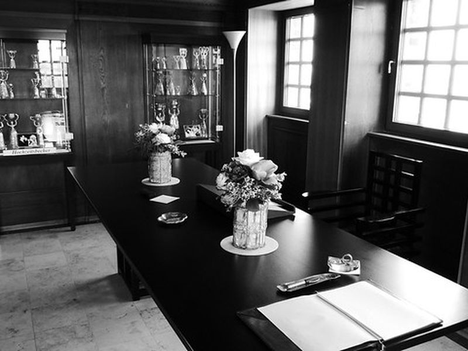
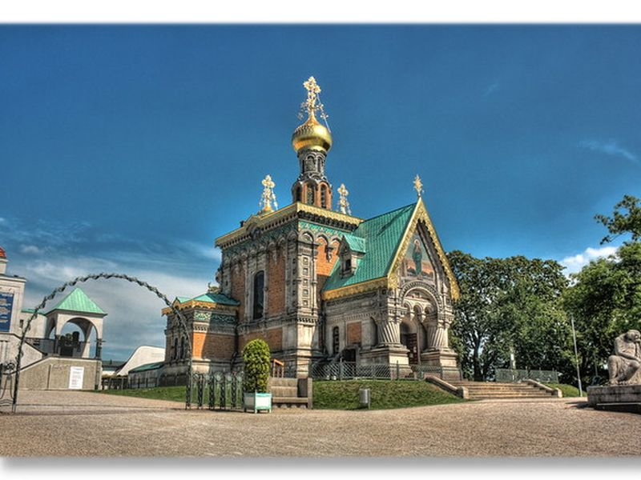
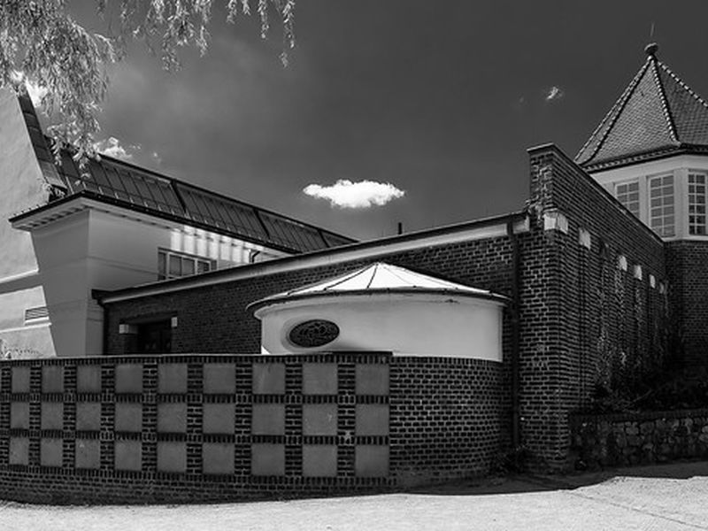
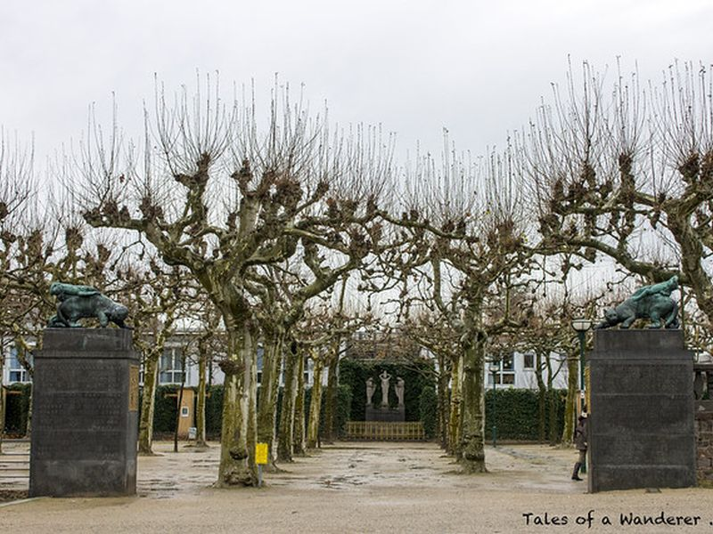
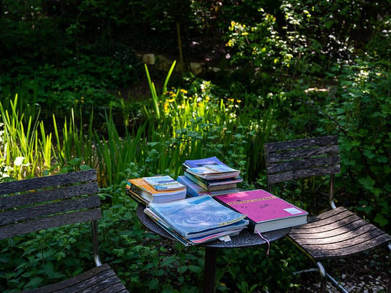
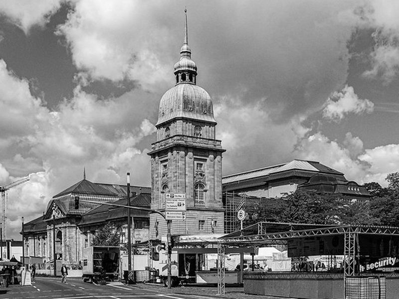
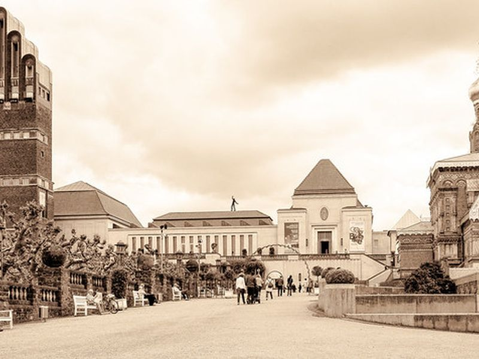
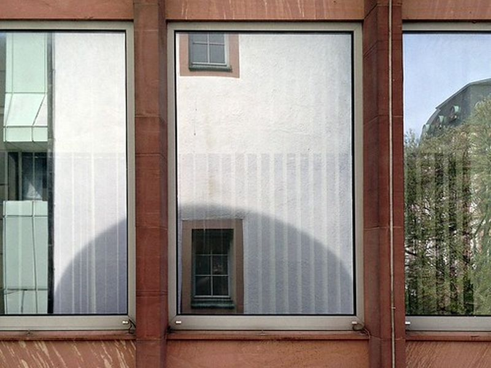

Explore Darmstadt
A Brief History
Darmstadt developed as the residence of the landgraves and later grand dukes of Hesse before becoming a center of Jugendstil culture and modern science. Mathildenhohe, museums, civic towers, and court buildings trace the shift from dynastic residence to art colony and research city.
Attractions Map
Top Sights & Activities

Mathildenhöhe
Mathildenhohe is the artists' colony hill where Darmstadt became a major center of Jugendstil architecture and design. The ensemble is essential for understanding the city's role in early modern reform art and architecture.

Hochzeitsturm
The Wedding Tower is the signature monument on Mathildenhohe and was built for the marriage of Grand Duke Ernst Ludwig. Its profile made it a visual emblem of the artists' colony and of Darmstadt itself.

Orthodox Church of St. Mary Magdalene Darmstadt
The Russian Chapel on Mathildenhohe reflects dynastic ties between the Hessian court and the Russian imperial family. Its presence adds an international courtly layer to the hill's otherwise reformist artistic landscape.

Museum Künstlerkolonie
The Artists' Colony Museum interprets the buildings, design program, and social ambitions of the Darmstadt colony. It helps place the surrounding houses and gardens within a broader history of architecture, decorative arts, and reform movements.

Platanenhain
Platanenhain is one of the planned garden spaces on Mathildenhohe and forms part of the ensemble's ceremonial landscape. It shows how outdoor design was integrated with architecture and exhibition culture on the hill.

Vortex Garden - Mathildenhoehe
Mathildenhohe is the artists' colony hill where Darmstadt became a major center of Jugendstil architecture and design. The ensemble is essential for understanding the city's role in early modern reform art and architecture.

Hessisches Landesmuseum Darmstadt
The Hessian State Museum is one of Darmstadt's principal museums, with collections spanning art, natural history, and cultural history. It connects the city not only with court patronage but also with later civic collecting and scholarship.

Wissenschaftsschloss Darmstadt
The so-called Science Castle is a former residence building later adapted for academic and institutional use in Darmstadt. It reflects how older court architecture was absorbed into the city's educational and research identity.

Weißer Turm
The White Tower is a surviving fortification element in central Darmstadt and a reminder of the earlier walled town. Its survival helps connect the present city center with the pre-modern urban form that preceded later rebuilding.

Luisenplaza
Luisenplatz is Darmstadt's central square and a key point in the city's civic and transport layout. It marks the shift from dynastic residence planning to the public urban center of the modern city.